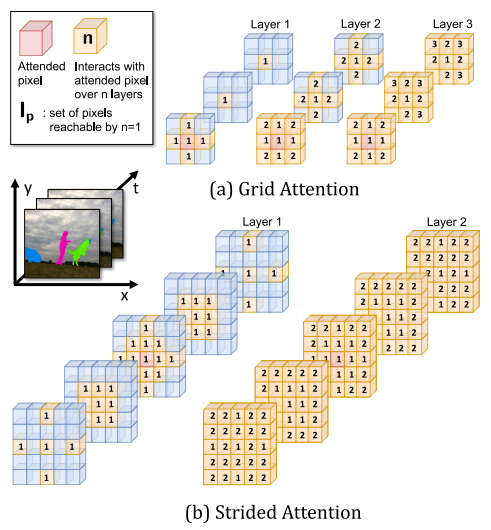

About me

I am a software engineer keenly interested in all manner of systems, and a Machine Learning Team Lead at ModiFace, Inc. My research interests include machine learning, deep learning, and computer vision. At ModiFace I apply deep learning to the beauty tech space to create augmented reality (AR) virtual experiences.
I had the pleasure of completing my M.A.Sc. at the University of Guelph advised by Graham Taylor in the Machine Learning Research Group (MLRG). My master's thesis focused on attention and fusion operators in computer vision.
Prior to that I worked at AMD writing firmware for the AMD Secure Processor.
Research
|  |
SSTVOS: Sparse Spatiotemporal Transformers for Video Object SegmentationBrendan Duke, Abdalla Ahmed, Christian Wolf, Parham Aarabi, Graham W. Taylor CVPR 2021 Oral (4.3% acceptance rate) paper / code We introduce a Transformer-based approach to video object segmentation (VOS). Our method, called Sparse Spatiotemporal Transformers (SST), extracts per-pixel representations for each object in a video using sparse attention over spatiotemporal features. |
LOHO: Latent Optimization of Hairstyles via OrthogonalizationRohit Saha, Brendan Duke, Florian Shkurti, Graham W. Taylor, Parham Aarabi CVPR 2021 paper / code We propose Latent Optimization of Hairstyles via Orthogonalization (LOHO), an optimization-based approach using GAN inversion to infill missing hair structure details in latent space during hairstyle transfer. Using LOHO for latent space manipulation, users can synthesize novel photorealistic images by manipulating hair attributes either individually or jointly, transferring the desired attributes from reference hairstyles. |
|

|
Attention and Fusion of Deep Representations for Computer VisionBrendan Duke M.A.Sc. Thesis thesis In my master's work I investigated attention and multimodal fusion operators. I applied these operators to visual question answering (VQA) and video object segmentation (VOS). |

|
Nail Polish Try-On: Realtime Semantic Segmentation of Small Objects for Native and Browser Smartphone AR ApplicationsBrendan Duke, Abdalla Ahmed, Edmund Phung, Irina Kezele, Parham Aarabi CVPR 2019 CV for AR/VR Workshop paper We provide a system for semantic segmentation of small objects that enables nail polish try-on AR applications to run client-side in realtime in native and web mobile applications. This work powers a nail polish brand's virtual try-on experience. |

|
Lightweight Real-time Makeup Try-on in Mobile Browsers with Tiny CNN Models for Facial TrackingTianxing Li, Zhi Yu, Edmund Phung, Brendan Duke, Irina Kezele, Parham Aarabi CVPR 2019 CV for AR/VR Workshop (Oral) paper We design small models for high accuracy facial alignment. The models we propose make use of light CNN architectures adapted to the facial alignment problem for accurate two-stage prediction of facial landmark coordinates from low-resolution output heatmaps. |
Generalized Hadamard-Product Fusion Operators for Visual Question AnsweringBrendan Duke, Graham W. Taylor Computer and Robot Vision (CRV) 2018 (Best Paper Award) paper We propose a generalized class of multimodal fusion operators for the task of visual question answering (VQA). We identify generalizations of existing multimodal fusion operators based on the Hadamard product, and show that specific non-trivial instantiations of this generalized fusion operator exhibit superior performance in terms of OpenEnded accuracy on the VQA task. |